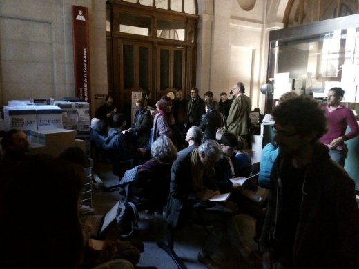
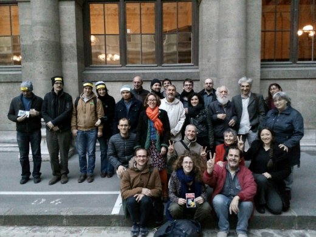

| |
Site dédié à la publication d'informations communiquées par le Collectif des déboulonneurs. En aucun cas ce site n'appelle à des actions illégales. | |
 |
||
|
Accueil du site > Paris > Sept déboulonneurs entendus par la cour d’appel de Paris 27 mars (...)
Communiqué de presse Le 26e procès du collectif des Déboulonneurs s’est tenu ce mercredi 27 mars 2019 après-midi au tribunal de Paris. Il s’agit d’un appel interjeté par les prévenus suite au jugement en 1re instance du 11 Octobre 2016. Ils contestent avoir participé à un groupement en vue de commettre des dégradations, motif pour lequel ils ont été condamnés en première instance. La cour a demandé aux sept prévenus d’exposer les faits pour lesquels ils sont poursuivis et leurs motivations. Christophe Laurens, architecte, a témoigné lors de ce procès. Son point de vue en tant qu’urbaniste sur les espaces dédiés à l’existence humaine - les villes donc - est tout à fait éclairant quand au fait que la présence massive de la publicité en tant que système pris dans son ensemble, est là de toute évidence pour jouer contre l’intérêt général. Il a contextualisé ses propos, précisant que nous nous trouvons actuellement dans une époque de surconsommation et de réchauffement climatique, à un moment où nous avons une responsabilité face au basculement de notre civilisation. 50 personnes étaient présentes cet après-midi au tribunal de Paris, dont Eric Coquerel de la France Insoumise et Alessandro Di Giuseppe de l’Eglise de la Très sainte Consommation, pour soutenir les revendications des Déboulonneurs :

L’avocat général (nom du procureur en cour d’appel) a demandé que soit maintenue la culpabilité des prévenus. Il a néanmoins proposé une requalification des faits en dégradation légère qu’il soumet à l’appréciation du tribunal. Maitre Ruef, avocate des Déboulonneurs, a notamment démontré qu’il n’y avait pas de dégradation puisque les dispositifs n’ont pas été endommagés, que la qualification d’attroupement n’était pas caractérisée en plus d’avoir soulevé plusieurs questions fort intéressantes sur la procédure elle-même. 
Le délibéré sera rendu le 29 mai 2019. |
|
Site utilisant SPIP - Hébergement Ouvaton
|